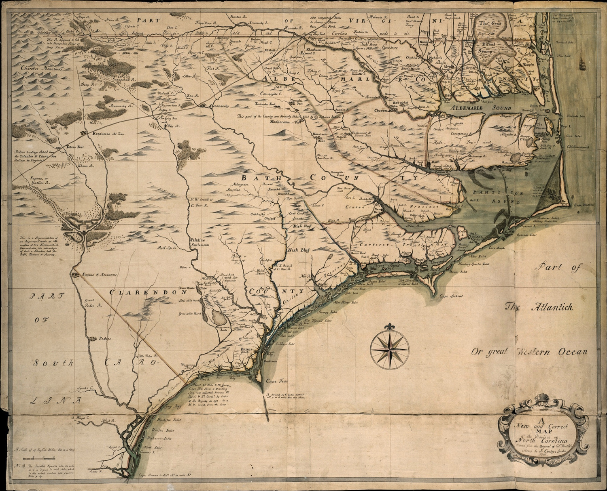

Some Infamous Flags!

Chart Pirate activity along the U.S coast.
Please use the map below to explore pirate events that are related to our three pirate leaders and where they took place in NC.
How to play
Click on an icon to reveal detailed information about battles, shipwrecks and possible hidden treasure.
Legend
Pirate Battles
Shipwrecks
Hidden treasure

X
The Adventure
June 10,1718. Sloop under the command of Blackbeard. Ran aground attempting to kedge the Queen Anne's Revenge off the bar near Beaufort Inlet, North Carolina.X
Queen Anne's Revenge
Originally a French slave ship named "La Concorde" Blackbeard was given the ship by his mentor, Captain Benjamin Hornigold. He modified it and turned it into his flagship, adding cannons and renaming her Queen Anne's Revenge. The name may come from the War of the Spanish Succession, known in the Americas as Queen Anne's War, in which Blackbeard had served in the Royal Navy. Blackbeard sailed this ship from the west coast of Africa to the Caribbean, attacking British, Dutch, and Portuguese merchant ships along the way. Blackbeard ran Queen Anne's Revenge aground in 1718 while entering Beaufort Inlet, stranding several crew members. A Professional underwater research firm, Intersal Inc. discovered the intact ship about a mile off of Atlantic Beach, NC in 1996 and recovery work continues today.X
Blackbeard's Last Stand
Pirate hunter, Lieutenant Robert Maynard, found Blackbeard's crew anchored on the inner side of Ocracoke Island on the evening of November 21, 1718. At daybreak, Maynard's two war ships entered the channel and engaged Blackbeard's ship,The Adventure. One of the Virginia ships, The Jane,took signifficant damage from the battle and Maynard's crew suffered substantial casualties. Confident that they vanquished their attackers, Blackbeard and his crew boarded The Jane, only to be ambushed by Maynard's crew who were hiding beneath the deck. Blackbeard died of multiple gunshot and stab wounds, forcing his crew to surrender. Maynard attached the infamous pirate's severed head to the bow of his ship as a trophy while sailing back to Virginia.X
Battle of Cape Fear River
In August 1718, infamous pirate Stede Bonnet anchored the Royal James on an estuary of the Cape Fear River to careen and repair the ship. In late August and September, Colonel William Rhett, with the authorisation of South Carolina governor Robert Johnson, led a naval expedition against pirates on the river. Rhett and Bonnet's men fought each other for hours, but the outnumbered pirates ultimately surrendered. Rhett arrested the pirates and brought them to Charleston in early October. Bonnet escaped on 24 October, but was recaptured on Sullivan's Island. On 10 November, Bonnet was brought to trial and charged with two acts of piracy. Judge Nicholas Trott sentenced Bonnet to death.X
Captain Kidd's hidden treasure
Legend has it that wealthy Scottish pirate Captain James Kidd may have buried treasure in Masonboro Island on as he fled up the coast toward New York. In May 2015, a 50-kilogram (110 lb) ingot of silver was found in a wreck off the coast of Île Sainte-Marie in Madagascar believed to be part of Kidd's treasure. So far, searches along the Atlantic coast have yet to discover any of his legendary booty.